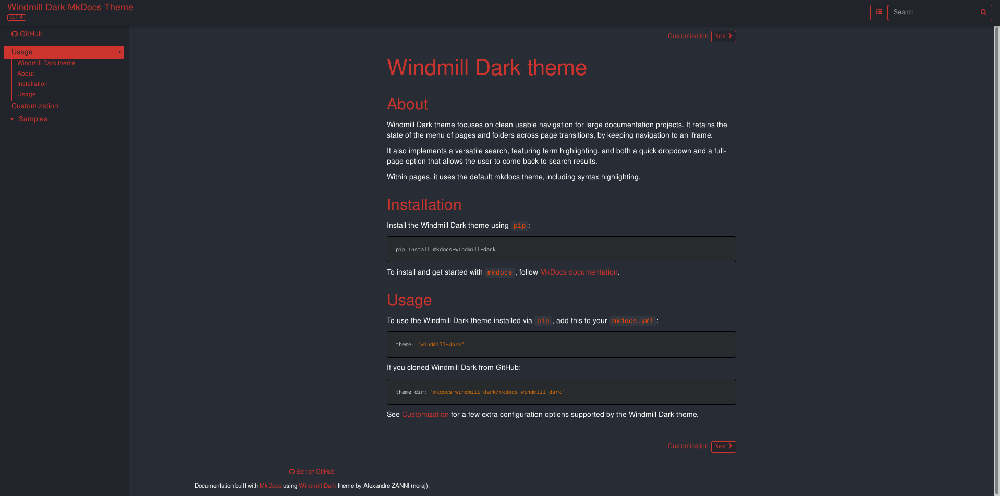
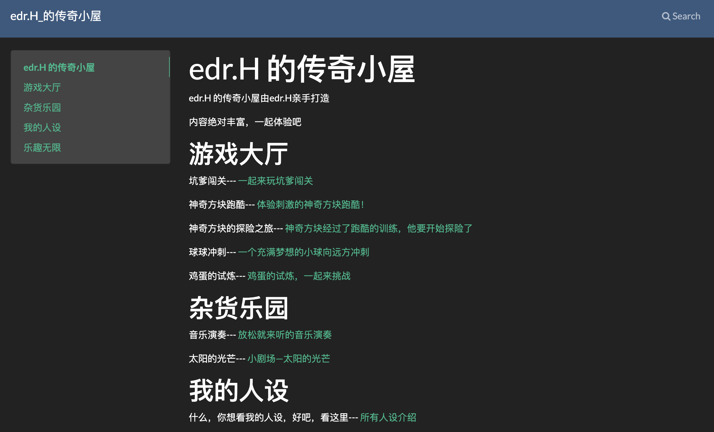
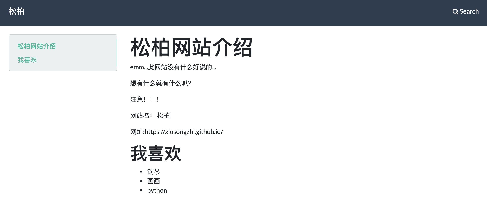
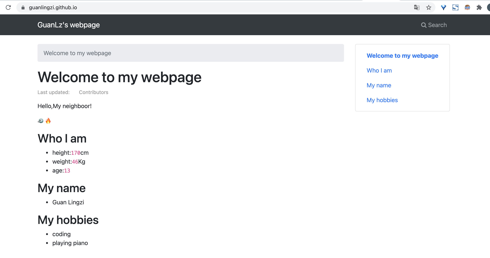
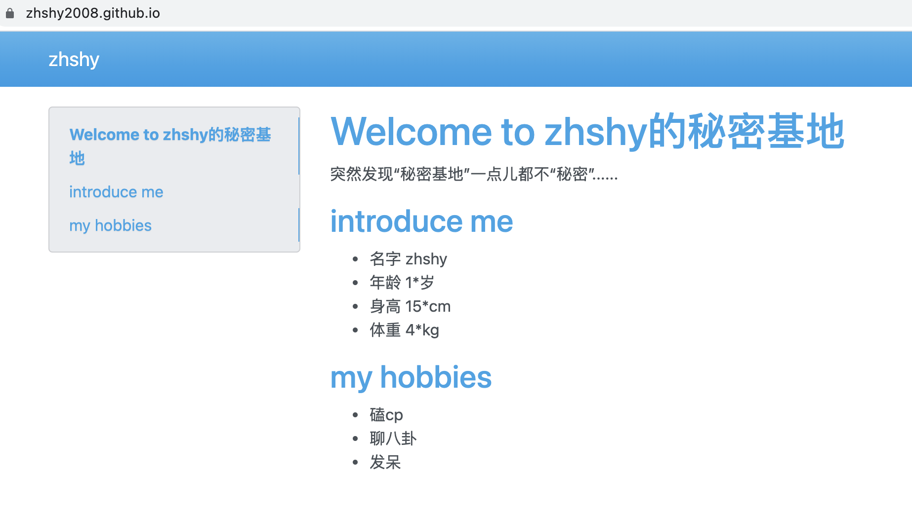
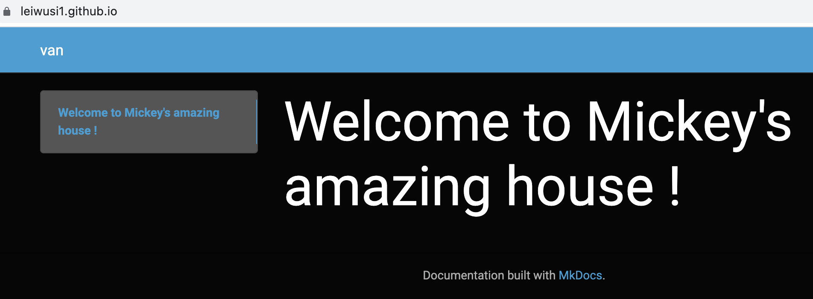
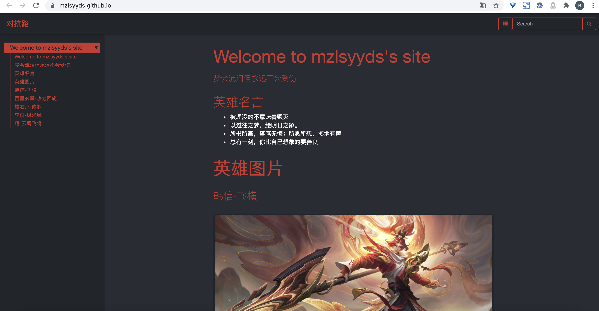
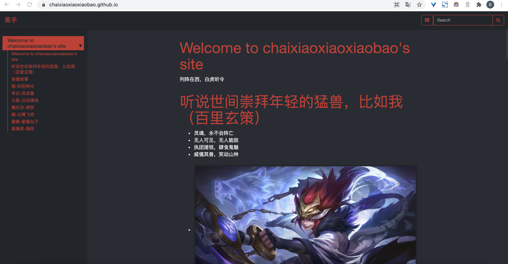

如何制作一个免费的个人网站
全部所需工具: 邮箱账号 + GitHub + MkDocs + Typora + 一般网络
1. 注册一个GitHub账号
- 网址: https://github.com
- 新建一个repo(repository), 名称是: \
.github.io, 其中\ 是用户名
2. 安装MkDocs
- 在命令行中, 使用
pip install mkdocs -i https://pypi.tuna.tsinghua.edu.cn/simple
- 如果提示pip不存在, 可尝试
pip3 install mkdocs -i https://pypi.tuna.tsinghua.edu.cn/simple
3. 安装Markdown编辑器
- 下载并安装Markdown编辑器: https://typora.io/#download
- 用Typora可以所见即所得地编辑
index.md等文件
4. 搭建网站
- 点进去有使用说明, 以
Windmill Dark为例:- 点击图片
- 进入主题官网https://github.com/noraj/mkdocs-windmill-dark
- 在下方找到Quick start
- 安装:
pip install mkdocs-windmill-dark - 使用: 修改
mkdocs.yml文件, 添加theme: windmill-dark, 保存
5. 编译上传
- 另开一个命令行窗口, 切换到yml文件所在文件夹
- 使用命令:
mkdocs build - 将生成的
site文件夹内所有的文件, 全部上传到<username>.github.io库中并提交, 之后可在浏览器中直接输入<username>.github.io进行访问. - 大功告成!
6. 成品展示
hzj

hws

glz
https://guanlingzi.github.io/ 
lmz
zsy

wxn

cjw
https://mzlsyyds.github.io/ 
czx
https://chaixiaoxiaoxiaobao.github.io/ 
7. 其他
如需在新标签页中打开页面:
1) 在mkdocs.yml的markdown_extensions:中增加 - attr_list :
markdown_extensions:
- attr_list
2) 在需要新开页面的链接后边添加{target=_blank}:
[example click](https://www.example.com){target=_blank}